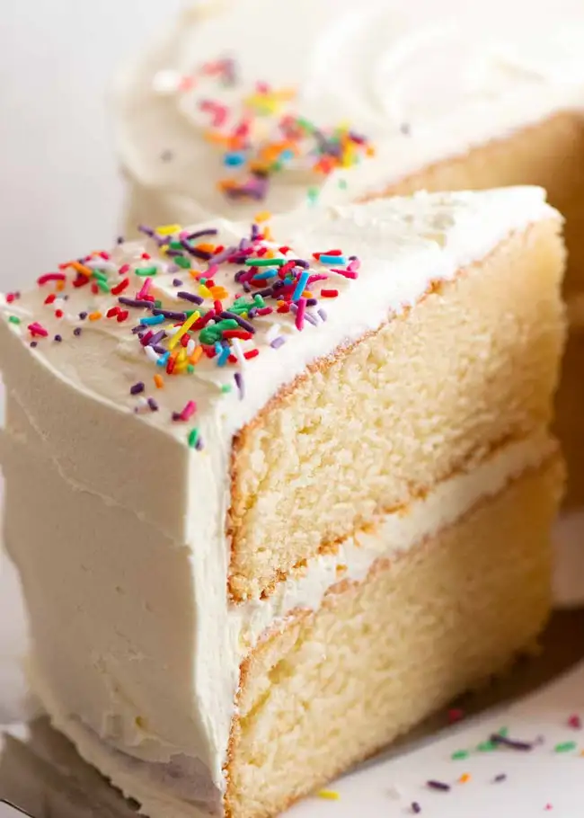

Delicious vanilla cake
Perfectly soft, plush, and classic vanilla cake recipe, made completely from scratch! So simple to make and tastes much better than box-mix! Find the original recipe here: Sugar Spun Run
Ingredients
- ½ cup unsalted butter softened to room temperature
- ½ cup canola or vegetable oil
- 1 ½ cup granulated sugar
- 4 large eggs room temperature preferred
- 1 Tablespoon vanilla extract
- 3 cups all-purpose flour
- 1 Tablespoon baking powder
- ½ teaspoon salt
- 1 ¼ cup buttermilk room temperature preferred
Steps
- Preheat oven to 350F (177C) and prepare two deep 8" round cake pans² by lining the bottoms with parchment paper and lightly greasing the sides. Set aside.
- In the bowl of a stand mixer (or in a large bowl using an electric mixer) cream together the butter, canola oil and sugar until creamy and well-combined.
- Add eggs, one at a time, beating until thoroughly combined after each addition.
- Stir in vanilla extract.
- In a separate, medium-sized bowl, whisk together flour, baking powder, and salt.
- Using a spatula and gently hand-mixing, alternate adding flour mixture and buttermilk to the butter mixture, starting and ending with flour mixture and mixing until just combined after each addition. The batter should be thoroughly combined, but there may be some small lumps in the batter and avoid over-mixing (and do not use your electric mixer or stand mixer for this step).
- Evenly divide batter into your prepared cake pans, and bake on 350F (175C) for 30-35 minutes. When the cake is done, the surface should spring back to the touch and a toothpick inserted in the center should come out mostly clean with few moist crumbs (no wet batter).
- Allow cakes to cool in their cake pans for 10-15 minutes before inverting onto cooling rack to cool completely before frosting.
- Frost cake using frosting and decorate with sprinkles (if desired).